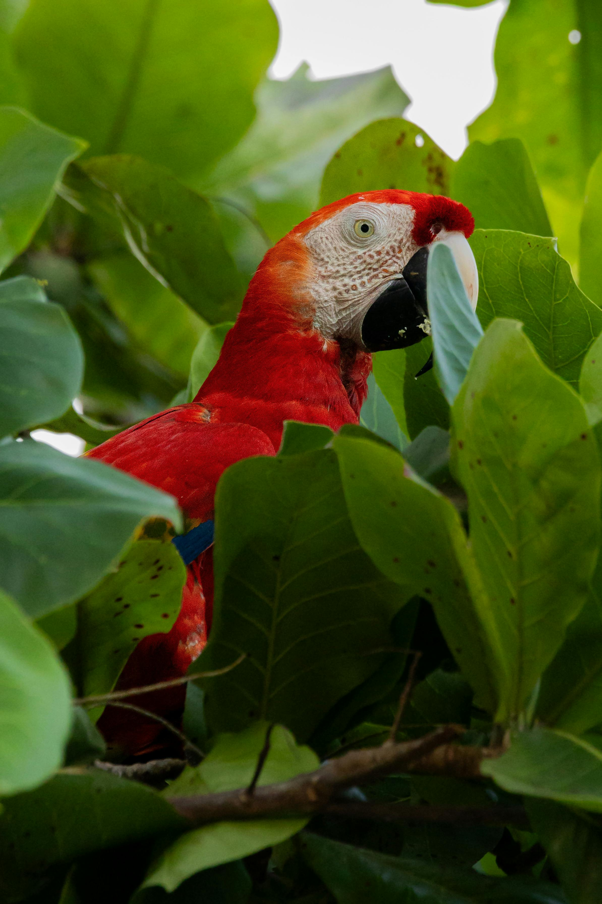

Scarlet Macaw
The scarlet macaw (Ara macao) is a large, vibrant parrot native to the humid evergreen forests of Central and South America. Known for their brilliant red, yellow, and blue plumage, they are highly intelligent, social birds that mate for life and can live up to 50 years in the wild. They primarily eat nuts, seeds, and fruits.